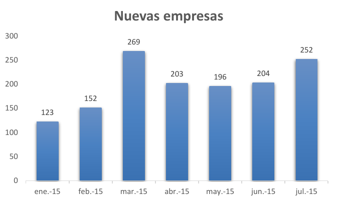
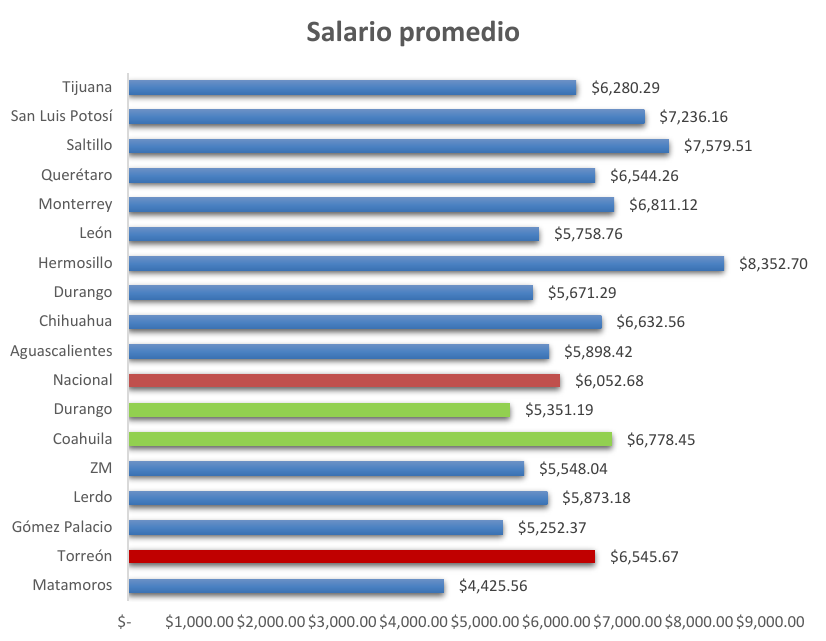
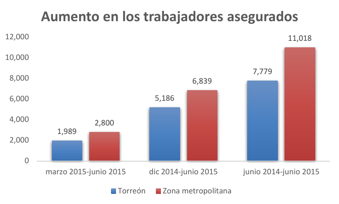

La depreciación del peso, la caída del precio del crudo y los recortes presupuestales, son algunos de los efectos del difícil entorno nacional e internacional en el que nos encontramos, pero en medio de todo eso, el municipio de Torreón ha mostrado dinamismo económico y, al cierre del segundo trimestre de 2015 la región muestra fortalezas para afrontar los factores macroeconómicos. A continuación lo más relevante:
Tan sólo durante los meses de abril, mayo y junio se registraron un total de 603 nuevas empresas, casi el doble de las 313 registradas en el mismo periodo de 2014, de acuerdo con la Dirección General de Desarrollo Económico. Del total registradas este año la gran mayoría clasifican como micro y pequeñas debido a que ocupan en promedio entre 5 y 15 personas. Entre los principales giros destacan el comercio al por menor y la preparación de alimentos, representando juntos más del 30% del total.

Fuente: Elaboración IMPLAN con datos de Ventanilla Universal de la Dirección General de Desarrollo Económico.
Entre los datos más importantes se destaca que la tasa de informalidad bajó 4 puntos porcentuales, de 44% a 40%, después de haber subido el trimestre anterior. Mientras que el salario promedio aumentó de $ 6,434.28 a $ 6,545.67 y aunado a la baja inflación se traduce en mayor poder adquisitivo en el consumidor.
Torreón muestra un salario promedio competitivo con respecto al promedio nacional de $ 6,052.68 y a otros municipios de la república como León, Querétaro, Tijuana, Aguascalientes y Durango.
Sin embargo, aún no alcanza el promedio estatal de $ 6,778.45 y enfrenta una diferencia considerable con los municipios de Saltillo, Hermosillo y San Luis Potosí.

Fuente: Elaboración IMPLAN con datos de la Encuesta Nacional de Ocupación y Empleo (ENOE) de INEGI.
Por otro lado, el balance muestra que la inflación trimestral fue negativa y se mantuvo por debajo de la inflación nacional de -0.59%, siendo la nuestra de -0.75%. La inflación anual al mes de junio para nuestro municipio fue de 2.59%, mientras la nacional fue de 2.87%.
Además los trabajadores asegurados aumentaron en 1,989 en el municipio, mientras el acumulado semestral fue de 5,186 y el interanual de 7,779. En la zona metropolitana de La Laguna el aumento interanual fue de 11,018 asegurados.

Fuente: Elaboración IMPLAN con datos del Instituto Mexicano del Seguro Social (IMSS).
Otro punto a destacar es que la tasa de informalidad en este momento es inferior a la nacional, ya que la tasa de informalidad en México para el segundo trimestre es de 57.81%, mientras la de Torreón y La Laguna son de 40.66 y 44.10% respectivamente.
Asimismo la tasa de desempleo se mantuvo sin variaciones significativas tanto en Torreón como en la zona metropolitana, deteniéndose en 6.28 y 5.87% respectivamente. Las cifras son superiores a las del mismo trimestre en 2014 y además se encuentran por encima de la tasa nacional de 4.35% y la estatal de 5.30%.
La apertura de nuevos negocios es un indicador importante asociado con la facilidad de hacer negocios, la formalización de la economía y el desarrollo económico en general. El hecho de que los registros de nuevas empresas tenga una tendencia positiva en los últimos años y especialmente en este trimestre habla también de más oportunidades de empleo y mayor consumo.
Sin embargo a pesar de los aumentos de asegurados reflejados en los datos del Instituto Municipal del Seguro Social (IMSS), la tasa de desempleo no tuvo ningún movimiento con respecto al trimestre pasado. En esta ocasión, las variables que parecen reflejar los nuevos asegurados son la informalidad y la apertura de empresas. Recordemos que la creación de negocios formales, además de generar nuevos empleos, puede ocasionar la transición de capital humano del sector informal, al formal.
Finalmente el precio del dólar podría estar beneficiando nuestro consumo interno, pues menos gente estará dispuesta a consumir productos importados. En un municipio como el nuestro, tan cerca de la frontera, las personas son más sensibles a las variaciones en el tipo de cambio. Desde otro punto de vista, actualmente en el municipio de Torreón 113 empresas se encuentran vigentes en uno o más programas de apoyo a exportadores de la Secretaría de Economía, mismas que pueden estar experimentando mayores ganancias.
Datos
- La tasa de informalidad bajó 4 puntos porcentuales, de 44% a 40%, después de haber subido el trimestre anterior.
- El salario promedio aumentó de $ 6,434.28 a $ 6,545.67 y aunado a la baja inflación se traduce en mayor poder adquisitivo en el consumidor.
Comparativos
- Torreón muestra un salario promedio competitivo con respecto al promedio nacional de $ 6,052.68y a otros municipios de la república como León, Querétaro, Tijuana, Aguascalientes y Durango.
- Sin embargo, aún no alcanza el promedio estatal de $ 6,778.45y enfrenta un gap considerable con los municipios de Saltillo, Hermosillo y San Luis Potosí.